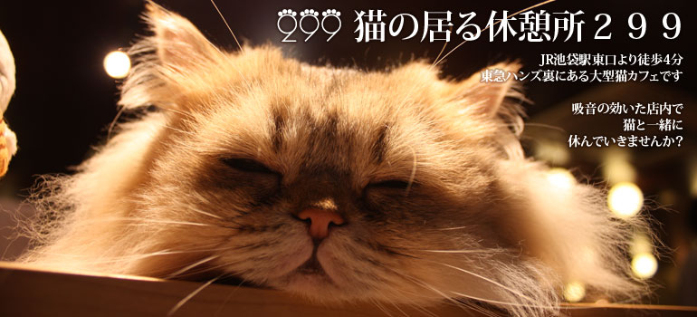
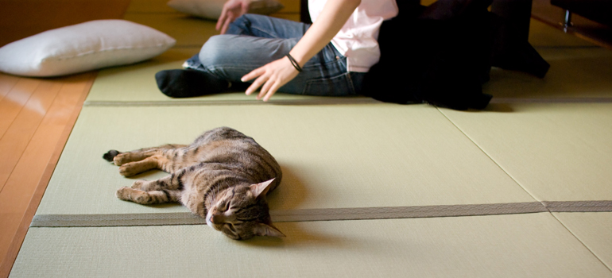
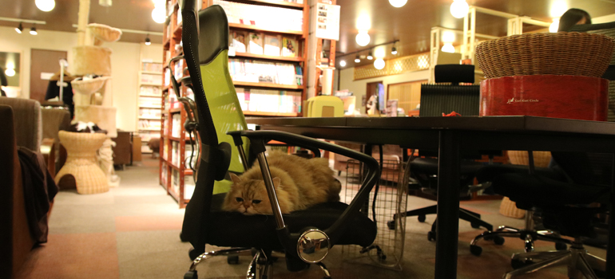
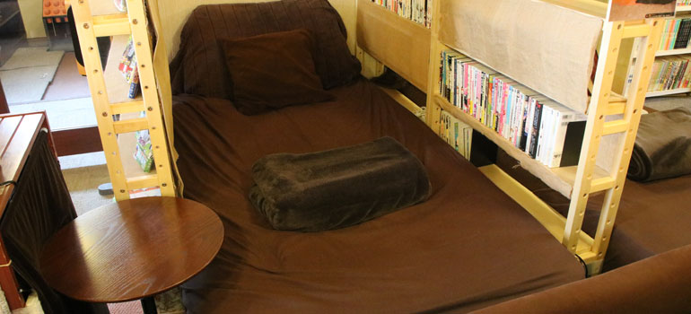
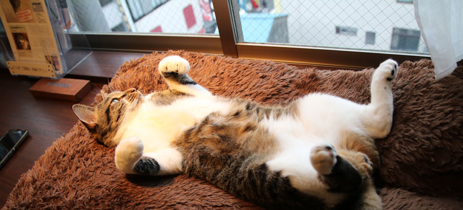
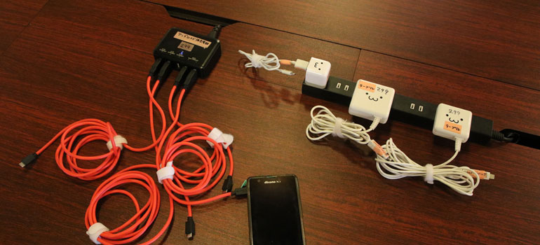

ゆったり、のんびりくつろげる猫カフェです。
- 平均的な猫カフェの４倍という広さ。
- ソファ席を中心とした、くつろげる座席。
- １０分２００円から利用できますので、休憩や待ち合わせ、隙間時間の暇つぶしなどにどうぞ。

夏涼しい畳席。冬温かいコタツ席。
- 奥の畳エリアには円形こたつ×４セット。
- 寝転がったり、だらけたりできます。
- カードゲームやボードゲームも置いてありますので、自由に使ってください。

PC作業に便利なテーブル席。
- 240cm大テーブル＋ワーキングチェア×6。
- バロンチェアなど高級ワーキングチェアも有り。
- 電源・USB/iPhone充電器完備。

ゆったり寝転がれるベッド席。
- 寝転がれるどころか、寝てしまう人もいるベッド席×6。
- （いびきが心配な方は防止グッズをご持参ください）

清潔で静かな室内空間。
- ニオイ排除を最優先した設計と運用で、OPEN8年経過しても動物臭のしない店内。
- 周囲の音や声を吸収するため、掃除は大変ですがカーペットや布製ソファを使っています。
- 猫は定期的にシャンプーしています。

電源利用自由。Wi-fi利用自由。
- スマホやタブレットの充電にどうぞ。
- iPhoneも充電できます。
- 8割ほどの席にコンセント・充電器があります。